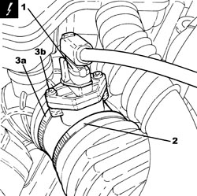
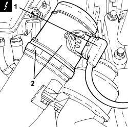

1056F09 HOT FILM AIR FLOW METER - R.R
- Path
- Procedures > 10 ENGINE > 1056 PETROL INJECTION SYSTEM > 1056F PETROL DIRECT INJECTION SYSTEM > 1056F09 HOT FILM AIR FLOW METER - R.R
- Kind
- repair procedure (removal / refitting; the operation number is the code)
- Applies to
- engines: 2.2 JTS, 3.2 JTS; all production periods
- Interactive page
- https://sloeber94.github.io/elrnDB-aBrrSpdr/en/#/946001906
Applies to: engines: 2.2 JTS; all production periods
 Removing
Removing
 Refitting
Refitting- Make sure that the ignition key is in the OFF position, then disconnect the battery terminal (-).
Description | Connector | |
|---|---|---|
- | Battery |
1. Disconnect the electrical connection from the air flow meter.
Description | Connector | |
|---|---|---|
1 | Air flow meter |
2. Loosen the band and disconnect the corrugated hose from the air flow meter.
3. Loosen the band (3a) and remove the air flow meter (3b).

Applies to: engines: 2.2 JTS; all production periods
Refitting
Removing- Place the air flow meter back in its housing and secure it using the band.
- Connect the corrugated hose to the air flow meter and secure it using the band.
- Connect the electrical connection to the air flow meter.
- Connect the negative battery terminal.
Applies to: engines: 3.2 JTS; all production periods
Removing
RefittingOp. 1048A63 HOSE CONNECTING RESONATOR, FLOW METER AND THROTTLE BODY - R.R.
1. Disconnect the electrical connection for the air flow meter.
Description | Connector | |
|---|---|---|
1 | Air flow meter |
2. Loosen the band and remove the air flow meter.

Applies to: engines: 3.2 JTS; all production periods
Refitting
Removing- Place the air flow meter back in its housing and secure it using the band.
- Connect the electrical connection for the air flow meter.
Op. 1048A63 HOSE CONNECTING RESONATOR, FLOW METER AND THROTTLE BODY - R.R.
Topics linked from this page (3)
- 1048A63 HOSE CONNECTING RESONATOR, FLOW METER AND THROTTLE BODY - R.R.
- A001 BATTERY
- K041 AIR FLOW METER
Topics that link to this page (6)
- B010 ENGINE DOES NOT START (UNDER ANY CIRCUMSTANCES)
- 1004B14 POWER UNIT WITH AUTOMATIC TRANSMISSION R + R
- E5030 PETROL ENGINE ELECTRONIC MANAGEMENT - WIRING DIAGRAM
- E5030 PETROL ENGINE ELECTRONIC MANAGEMENT - COMPONENT LOCATION
- E5030 PETROL ENGINE ELECTRONIC MANAGEMENT - WIRING DIAGRAM
- E5030 PETROL ENGINE ELECTRONIC MANAGEMENT - COMPONENT LOCATION